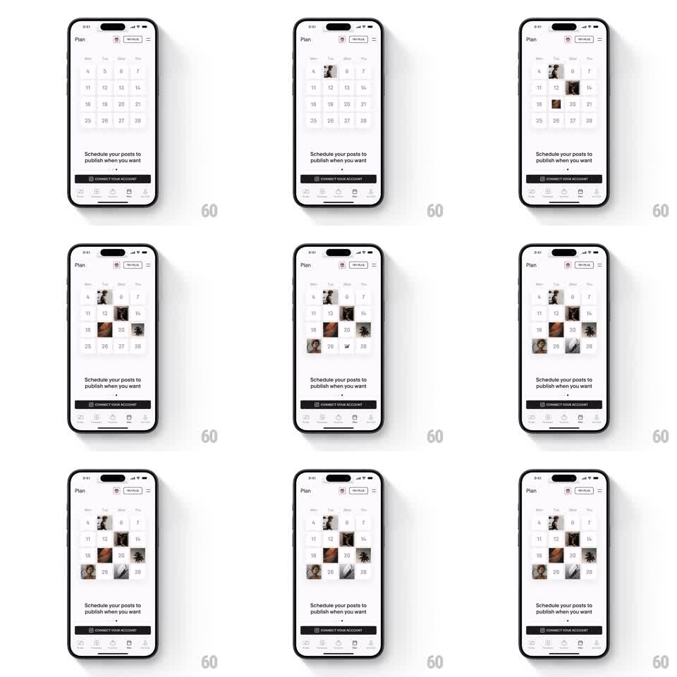

Media
Frame-by-frame

Rebuild this animation 1:1: Unfold's "Schedule your posts" intro - on a month calendar grid, photo thumbnails pop into scattered date cells one at a time with a staggered, elegant rhythm until the month is sprinkled with planned posts.

Rebuild this animation 1:1: Unfold's "Schedule your posts" intro - on a month calendar grid, photo thumbnails pop into scattered date cells one at a time with a staggered, elegant rhythm until the month is sprinkled with planned posts.
## Integration
Integration: stack-agnostic spec - springs given as stiffness/damping, timed motions as duration + curve; map every value to your framework and animation library of choice.
## Scene
Light planner screen: top bar ("Plan", calendar + "NEW PLUS" icons, hamburger), a month grid (weekday header row, 4-5 weeks of day numbers), headline "Schedule your posts to publish when you want", page dots, black "CONNECT YOUR ACCOUNT" button, tab bar.
## Motion spec
Pattern: staggered calendar population, ~3s.
- Calendar grid fades in empty (300ms).
- 6-8 photo thumbnails drop into non-adjacent date cells in random-looking (but fixed) order, one every 250ms.
- Each thumbnail scales 0.5 -> 1 with a spring (~350/20) and fades in, slightly overshooting its cell bounds before settling.
- Day numbers under occupied cells dim to 40% opacity as the thumbnail lands.
## Calibration
- Stagger interval is even (250ms); accelerating the sequence feels frantic, decelerating feels broken.
- Thumbnails cover the day number partially but never bleed into neighboring cells.
## Reduced motion
All thumbnails fade in at final size together (400ms), order ignored.
## Don't miss
- Placement order reads random across the month, not left-to-right reading order - that's what sells "scheduling freedom".
- The calendar's weekday header and grid lines are static; only cells receive content.